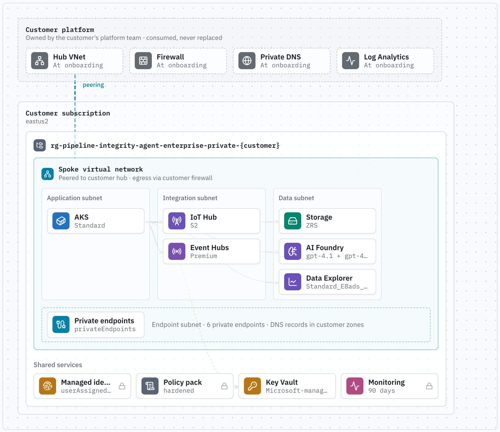
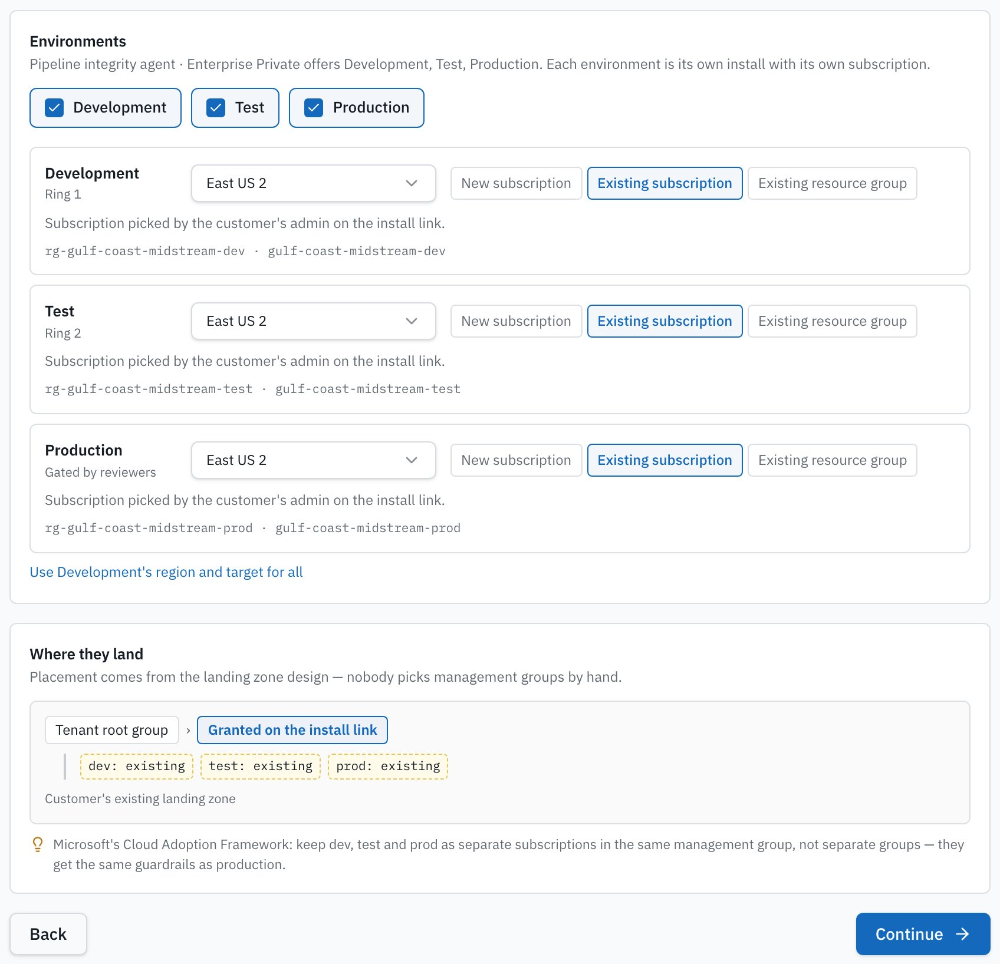
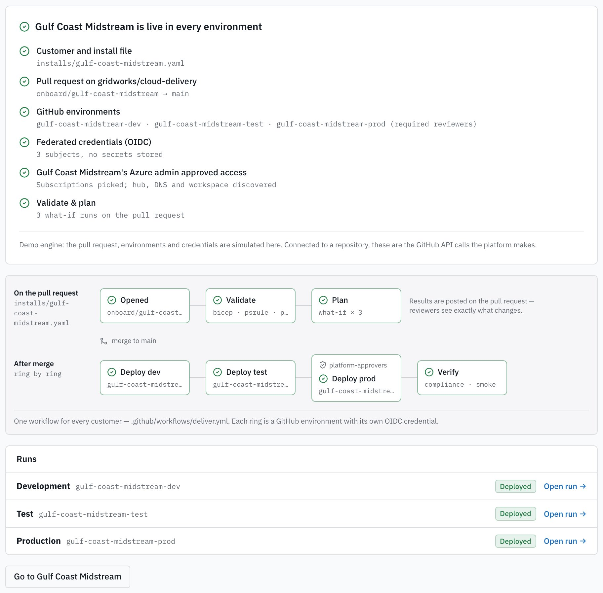
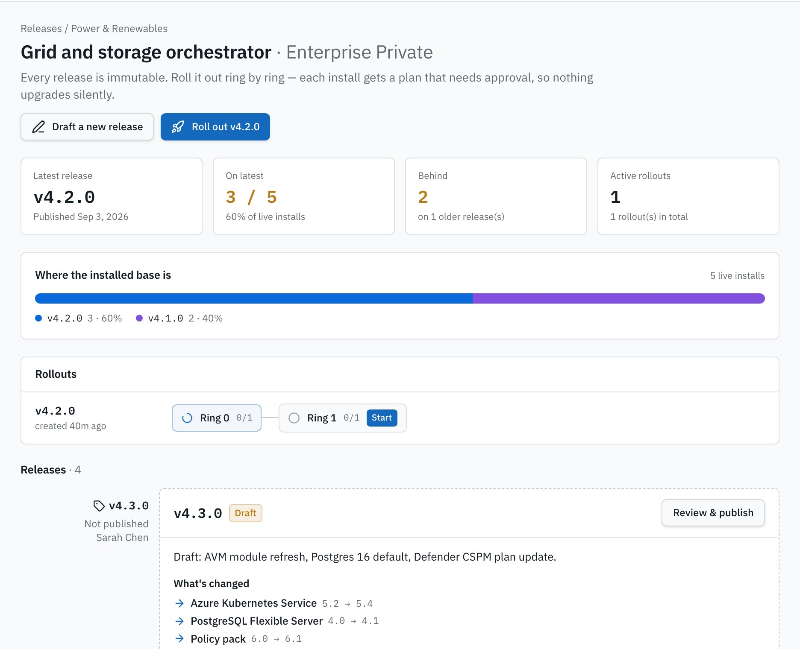
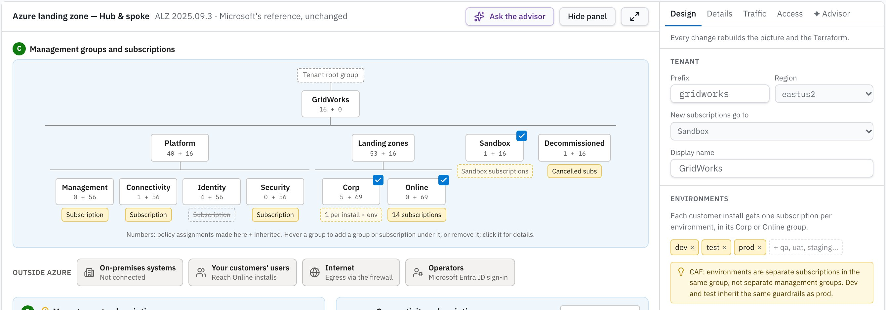
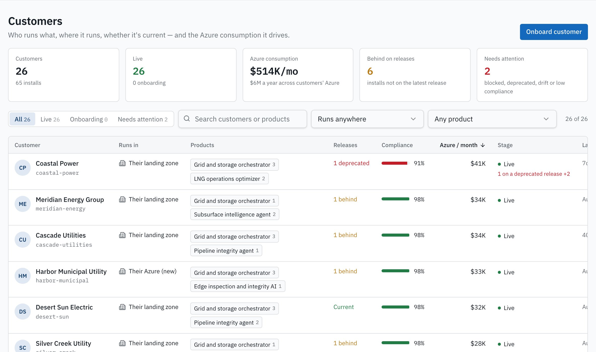
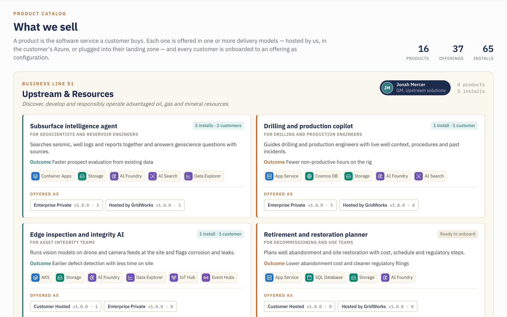

Cloud Delivery
Cloud DeliveryEvery customer is a project
Subscriptions, networks, identity, policy and pipelines are designed again for each deal. Your best engineers become an Azure services team.
For software companies delivering on Azure
Set it up once. Every new customer gets it the same way — hosted by you or in their own Azure — in hours, not another cloud project. Upgrades reach everyone, safely.
Deploys from a repo into your own Azure subscription. Your tenant, your data, your code.
Product
Pipeline integrity agent
Release v1.2
v1.2 published
Today
24 customers = 24 Azure projects
Subscriptions, networking, security reviews, policy, CI/CD — rebuilt and re-argued for every customer. Each one drifts into its own version.
With Cloud Delivery
24 customers = 1 product definition, 24 install files
Each customer is configuration: where it runs, which environments, their approvals. The product, pipeline and guardrails are shared.
Why this exists
Growth stalls at the delivery layer. Every new logo drags engineers back into cloud plumbing.
Subscriptions, networks, identity, policy and pipelines are designed again for each deal. Your best engineers become an Azure services team.
Their landing zone denies public endpoints, owns DNS and the firewall, and wants proof. Security reviews start from zero every time.
Installs drift apart. Nobody can say who runs which version, where — so every release becomes 24 small migrations.
How it works
01
A product is what customers buy. An offering is that product delivered one way on Azure — hosted by you, in the customer's Azure, or plugged into their landing zone. Pick services on a canvas; the Bicep, the pipeline and the short list of customer inputs are generated.

02
Pick the product, choose where each environment lands — new subscription, existing subscription or resource group — and launch. One install file goes to your repo; GitHub Actions or Azure Pipelines validates and plans it on the pull request.

03
Non-production deploys on merge. Production waits for its required reviewers. Every step is a signal you can see — the same run for every customer.

04
See where the installed base is, what changed in each release and who runs it. Roll out in rings; every install gets a plan that needs approval. Nothing upgrades silently.

Customer IT says yes
Enterprise customers already run Microsoft's Azure Landing Zones. Cloud Delivery designs, reads and plugs into them — so your product arrives the way their platform team expects.

Run it like a business
What you sell, who runs it, whether it's current, and the Azure consumption each customer drives.


Built on what enterprise Azure teams already trust
Yours to run
Each software company deploys its own Cloud Delivery from the repo. It becomes your delivery platform.
One click deploys the app, its database and an AI advisor into your subscription. No third party sees your customers.
Products, offerings and every customer's install file live in your Git history. Review, audit and revert like code.
Add services, policies or your own checks. It's the same stack your team already runs — TypeScript, PostgreSQL, Bicep and Terraform.
Questions
Those run infrastructure code well — and can stay your engine. Cloud Delivery sits one level up: it knows your products and delivery models, where each customer's environments belong in their management group hierarchy, which approvals apply, and which release everyone is on. You stop writing per-customer glue.
That's the Enterprise Private delivery model. The install consumes their hub network, firewall, private DNS and Log Analytics, lands in the management group their admin grants, and uses private endpoints only. Nothing on their platform is replaced.
Host it for them in your own Azure — each customer gets dedicated subscriptions in your hosting tenant — or build them a landing zone from Microsoft's reference as part of onboarding.
Either. GitHub Actions is the default; Azure Pipelines gets the same flow — pull request validation, environments with approvals, workload identity federation.
The designer, reviews, generated Bicep and Terraform, and the landing zone scan are real. In the demo, deployments and GitHub calls are simulated by a demo engine so you can click through end to end safely.